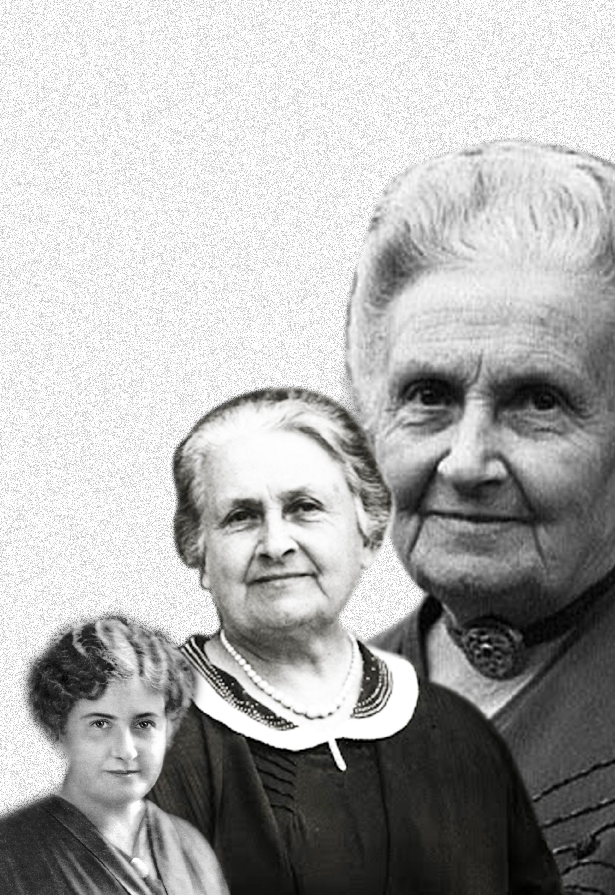
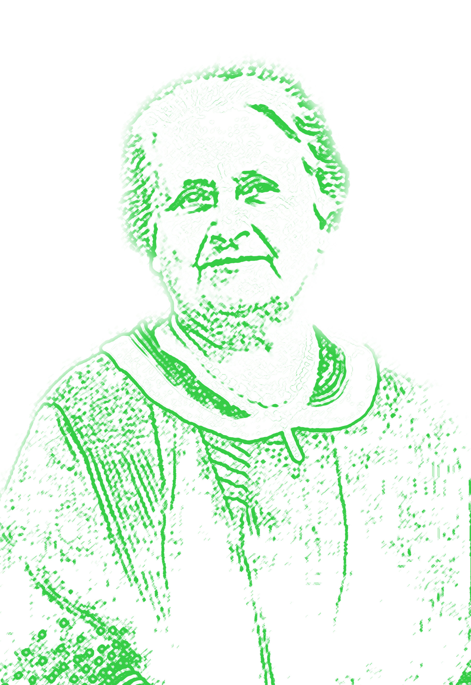
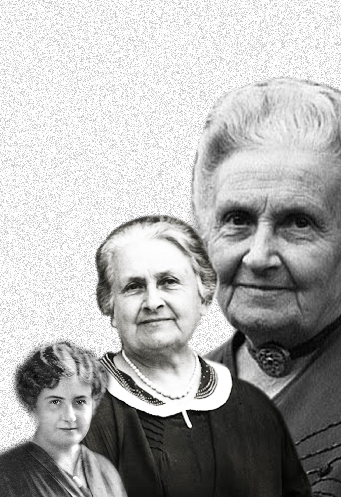
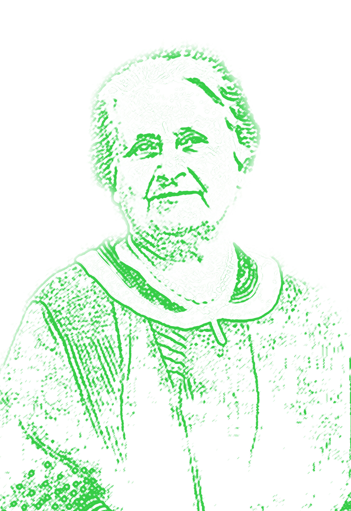

> Expérimentations graphiques sur des portraits
Création d'un principe de couvertures déclinable pour la série de livres Femmes d'exception avec pour objectif la mise en avant de ces femmes.
 


